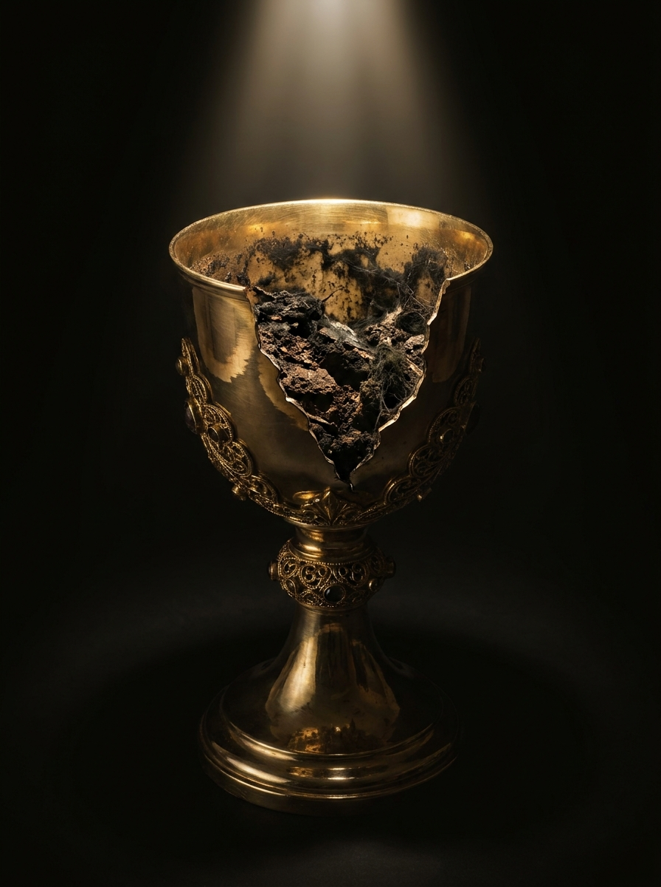
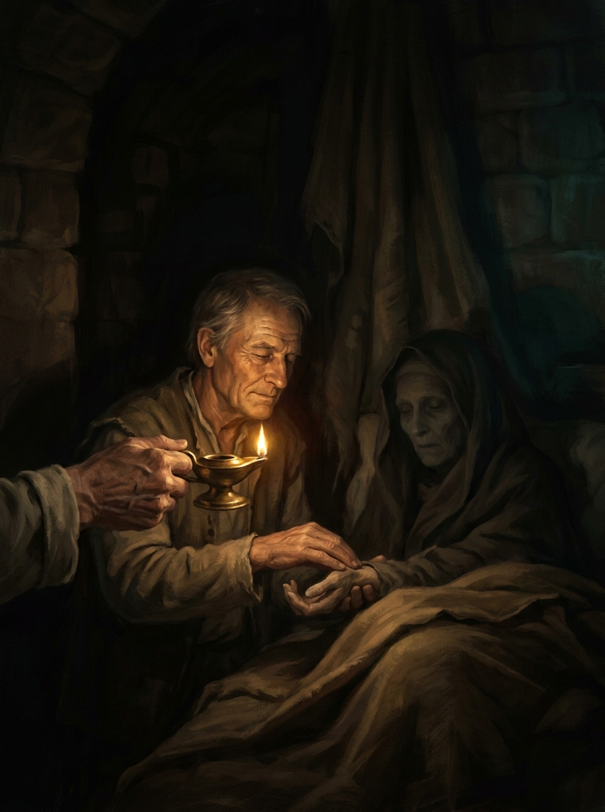

“Então Moisés subiu ao monte, e a nuvem cobriu o monte... e a aparência da glória do Senhor era como um fogo consumidor no cume do monte, aos olhos dos filhos de Israel. E entrou Moisés no meio da nuvem, depois que subiu ao monte.”
Bispo Paulo Filho, pastor sênior da Igreja da Família, em Pernambuco, escreve Novo Nascimento em torno de uma pergunta incômoda: por que tanta gente frequenta a igreja, decora versículo, canta no culto, e continua exatamente a mesma por dentro? A resposta que ele propõe atravessa o livro inteiro. Não nascemos neutros. Herdamos de Adão uma natureza pecaminosa que fica adormecida, não extinta, e religião nenhuma dá conta de arrancá-la. Só o novo nascimento, a identificação com a morte e a ressurreição de Cristo, troca essa natureza pela raiz.
O livro caminha em dez capítulos curtos, cada um construído do mesmo jeito: uma cena do dia a dia, uma história bíblica ou uma citação que expõe alguma máscara que usamos, e a partir daí um argumento bíblico sobre a diferença entre parecer transformado e ser transformado. Não é um livro de sete princípios ou de passos numerados. É antes uma sequência de golpes, cada capítulo mirando um jeito diferente de esconder o que realmente somos: a hipocrisia religiosa, a aparência, o carisma sem caráter, os atalhos espirituais.
A imagem que amarra o livro aparece já no início e volta lá pelo capítulo 6: um gato doméstico tem os instintos de caça adormecidos, mas basta soltar um rato perto dele para a natureza felina acordar. Segundo o autor, é assim que funciona com o pecado. Pode ficar quieto por anos, escondido atrás de bom comportamento e vida de igreja, mas continua lá, esperando a circunstância certa para aparecer. A única saída, defende o livro, não é podar o comportamento. É arrancar a raiz.
Você já parou pra pensar no efeito dominó? A peça da frente cai, empurra a de trás, que empurra a próxima, e assim todo mundo na fileira acaba no chão, mesmo quem não encostou a mão em nada. É essa a imagem que o autor usa pra explicar Romanos 5: quando Adão caiu, não caiu sozinho. Toda a humanidade estava, por assim dizer, dentro dele, e foi arrastada na mesma queda. Paulo escreve que "todos pecaram" não porque cada um copiou o pecado de Adão, mas porque herdou a mesma natureza dele, como um DNA espiritual passado adiante.
Daí a provocação do capítulo: ninguém nasce inocente. É comum olhar pra um bebê e achar que ali só existe pureza, mas o autor lembra que essa natureza fica só adormecida, não ausente. Compara a um gato doméstico, todo manso no sofá, mas cujos instintos de caça voltam inteiros no segundo em que um rato aparece. Tire o doce da mão de uma criança pequena e veja a reação. A natureza estava lá o tempo todo, só esperando a circunstância certa. Enquanto não houver identificação com a morte e a ressurreição de Cristo, essa é a herança que carregamos.
Jesus não era brando com quem usava a fé como fachada. "Ai de vós, escribas e fariseus, hipócritas!", ele diz em Mateus 23:25, e o autor puxa o fio daí: a palavra hipócrita, em grego, descreve o ator de teatro, alguém que interpreta um papel diferente de quem realmente é. Os religiosos da época tinham a aparência ajustada e o coração intocado, e escondiam isso atrás do comportamento correto nos rituais.
O ponto do capítulo é que essa tática continua em uso. Chama de "evangeliquês" o hábito de aprender o vocabulário certo, frequentar o templo certo, sem que nada por dentro tenha realmente mudado: um pé na igreja, outro no mundo, como brincavam na adolescência do autor. A explicação, segundo ele, é sempre a mesma: a natureza não foi mudada, só a superfície recebeu um verniz novo. E de que adianta esconder dos homens quem realmente somos, se diante de Deus nada está oculto? O capítulo fecha em Provérbios: o coração é a fonte de tudo o que fazemos, e enquanto ele não for novo, tudo o que sai dele continua contaminado.
Todo ano o mundo da moda para pra assistir à fashion week: modelos desfilando roupas de estilistas famosos, câmeras e olhos fixados na beleza exterior. O autor usa essa cena pra fazer uma pergunta simples. E quem está vestindo aquilo? Como vai o coração de quem desfila? Ele estende a comparação pra dentro da igreja: dá pra conhecer a Bíblia de cor, falar em línguas, chorar no culto, e mesmo assim estar apenas desfilando conhecimento religioso, sem que o coração tenha mudado de fato.
A cena bíblica que ancora o capítulo é a unção de Davi. Samuel vai à casa de Jessé esperando reconhecer o próximo rei pela aparência, e vai se impressionando com cada um dos sete irmãos mais velhos, até Deus interromper: não olhes para a aparência, porque o Senhor não vê como vê o homem. O homem vê o exterior; o Senhor vê o coração (1 Samuel 16:7). É esse mesmo coração, escreve o autor, que precisa nascer de novo. Sem isso, adianta pouco acertar a roupa e errar a raiz.
O que cada um enxerga
a roupa, a beleza, o desempenho, a performance de quem está no palco ou no altar.
o coração, exatamente como é quando ninguém está aplaudindo.

Esconde-esconde era uma das brincadeiras mais gostosas da infância: alguém fecha os olhos, conta até cem, e sai à procura de quem se escondeu. O autor usa essa lembrança pra descrever como muita gente trata a própria vida espiritual, como se desse pra se esconder de Deus em algum canto escuro por dentro. Cita Natanael, no Evangelho de João, sentado debaixo de uma figueira, longe de qualquer plateia. Quando Filipe o leva até Jesus, ele ouve algo que não fazia sentido pelos critérios normais: "Eis um verdadeiro israelita, em quem não há dolo... Antes de Filipe te chamar, eu te vi, quando estavas debaixo da figueira" (João 1:47-48).
O detalhe que o autor sublinha é o verbo ver. Jesus não estava apenas descrevendo a cena, um homem debaixo de uma árvore. Estava descrevendo o que só se enxerga por dentro: o caráter de Natanael, sondado antes mesmo do encontro acontecer. Fica a mesma lição de Salmos 139: antes que a palavra chegue à língua, Deus já a conhece por completo. Não existe esconderijo bom o suficiente.
Com pessoas, a intimidade costuma funcionar ao contrário do que se espera. Quanto mais alguém conhece a fundo o outro, mais chances de se decepcionar e se afastar quando descobre o que estava escondido atrás da imagem cuidada. O autor chama isso de conhecer "o lado negro" de alguém, emprestando a expressão de Star Wars, e nota que Deus funciona diferente: ama justamente por conhecer por completo, miséria incluída.
É o que explica uma cena que intriga muita gente religiosa: Jesus sentado à mesa com cobradores de impostos e gente malvista. Quando perguntam por que ele frequenta esse tipo de companhia, a resposta é direta: "Os que têm saúde não precisam de médico, mas sim os doentes. Eu vim para chamar os pecadores e não os bons" (Marcos 2:17). Não foram as virtudes de ninguém que atraíram a atenção de Deus, escreve o autor, foi a miséria. A mesma lógica aparece em Isaías, que se reconhece "homem de lábios impuros" bem no momento em que a graça o alcança. Deus não trata a gente de acordo com o que fizemos. Trata de acordo com o que Cristo já resolveu na cruz.

Não existe pé de laranja que dê manga, por mais que alguém deseje. Cada árvore frutifica de acordo com a própria espécie, e o autor usa essa obviedade da natureza pra explicar por que tanta gente reincide no mesmo pecado apesar de anos de igreja: não são os pecados, no plural, que definem o problema, é o pecado, no singular, a natureza por trás deles. Uma árvore da espécie errada vai continuar dando fruto errado até ser arrancada pela raiz, não só podada.
Jesus usa a mesma imagem com João Batista: "já está posto o machado à raiz das árvores; toda árvore, pois, que não produz bom fruto é cortada e lançada ao fogo" (Mateus 3:10). O autor lembra ainda uma imagem de Jó: um toco de árvore, mesmo cortado rente ao chão, volta a brotar assim que sente o cheiro da água. É a mesma coisa com a natureza pecaminosa: pode ficar podada por anos dentro do comportamento religioso correto, mas se a raiz continuar viva, ela volta. Retomando a imagem do gato do capítulo 1, soltar o rato de novo é só questão de tempo.
Podar não basta
cortar galho, ajustar comportamento; a religião até consegue fazer isso, por um tempo.
arrancar a natureza pecaminosa e plantar outra; só o novo nascimento faz isso.
O autor conta a história de um casal que, numa viagem, recebeu de volta o troco errado de um caixa de supermercado e decidiu voltar para devolver o dinheiro, que por acaso era o pagamento de férias dos funcionários do local. O gesto parecia puramente honesto, e o gerente, emocionado, quis até chamar um jornalista pra fazer uma matéria sobre o casal exemplar. Foi quando eles pediram, em particular, pra não aparecer: aquela viagem escondia um caso extraconjugal, e a reportagem denunciaria os dois às próprias famílias.
O capítulo usa essa história pra desmontar a ideia de que atitude correta prova coração transformado. Dá pra devolver dinheiro, frequentar o templo, levantar a mão no culto, e mesmo assim carregar por dentro uma condição que Paulo descreve sem meias palavras em Romanos: "Desventurado homem que sou! Quem me livrará do corpo desta morte?" (Romanos 7:24). A resposta de Paulo no versículo seguinte é o argumento inteiro do capítulo: não é religião que resolve isso. É Jesus Cristo.
Carisma, define o autor a partir do dicionário, é a capacidade de atrair, liderar e encantar. Não é ruim em si, é até útil pro Reino, mas funciona como um carro: uma ferramenta poderosa que também pode ser usada pra destruir. Os fariseus tinham carisma de sobra, e usavam exatamente essa capacidade pra enganar e esconder quem realmente eram. A igreja de Corinto é o exemplo bíblico que o autor escolhe: cheia de dons, de manifestações espirituais, aparentemente a mais poderosa entre as igrejas que Paulo tinha plantado, e mesmo assim repreendida sem rodeios, "como a carnais, como a crianças em Cristo" (1 Coríntios 3:1).
O segundo exemplo é ainda mais direto. No dia da entrada triunfal, o jumentinho carrega Jesus em meio à multidão em festa. No dia seguinte, sozinho, tentando repetir a mesma entrada, é escorraçado. O autor usa essa cena quase cômica pra afirmar algo sério: Deus pode usar alguém pra curar, pregar, profetizar, sem que essa pessoa jamais tenha nascido de novo. Carisma abre porta. Só caráter, formado por Cristo, sustenta o que está do lado de dentro dela.
Carisma x caráter
o poder de atrair, liderar e encantar; pode ser aprendido, e usado tanto para o bem quanto para enganar.
o que você é quando ninguém está vendo; só Cristo forma isso em alguém.
Tem gente que gosta de dizer que todos os caminhos levam a Deus, cada um do seu jeito, mas o autor não deixa esse ditado sobrar: só existe um caminho, e ele mesmo disse isso sem deixar margem, "Eu sou o caminho, e a verdade, e a vida. Ninguém vem ao Pai senão por mim" (João 14:6). Atalho, nesse sentido, não encurta a distância até Deus, só afasta mais.
O caminho que sobra é estreito, segundo Mateus 7:13-14, e passa por um lugar específico: a identificação com a morte e a ressurreição de Cristo. Não é entrar num prédio de igreja, trocar de roupa ou aprender o vocabulário certo. É reconhecer que, sem esse processo, o pecado continua sendo gerado pela mesma raiz de sempre, como Jesus explica a Nicodemos: "se alguém não nascer de novo, não pode ver o reino de Deus" (João 3:3).
A cruz, escreve o autor, cumpre um papel bem específico nessa história: expõe a real condição do coração humano antes de qualquer coisa. Jeremias 17:9 já avisava que o coração é enganoso e corrupto, ao ponto de ninguém conseguir se autoavaliar direito. Por isso a solução, segundo o livro, nunca foi reforma. Foi substituição, um coração inteiro trocado por outro.
A cruz é o único lugar em que essa troca acontece. Jesus explica o princípio em João 12:24: o grão de trigo que não morre fica sozinho, mas o que morre produz muito fruto. É a mesma lógica de Gálatas 2:20, um dos versículos mais citados no livro inteiro: "já estou crucificado com Cristo; e vivo, não mais eu, mas Cristo vive em mim". Sem esse tipo de morte, não existe o tipo de vida nova que o capítulo descreve. E, segundo o autor, essa é a maior prova de amor que existe.
O último capítulo começa descartando as respostas óbvias. Não é cura de doença, porque Deus pode curar qualquer coisa sem que nada mude no caráter de quem foi curado. Não é prosperidade financeira, porque Ele é rico e pode dar sem que isso prove amor. Não é restauração de família, por mais que o autor reconheça o quanto isso emociona. A prova maior, escreve, está em Romanos: "no devido tempo, quando ainda éramos fracos, Cristo morreu por todos os ímpios" (Romanos 5:6).
É o mesmo argumento que atravessou o livro inteiro, só que agora na forma mais concentrada possível: Cristo não morreu depois que a gente melhorou, morreu exatamente enquanto éramos o problema. Pertencer a uma religião, seja qual for, sem passar por esse novo nascimento, não resolve nada, porque o alvo nunca foi o comportamento. Sempre foi o coração. O livro termina sem grandes floreios, numa frase que resume tudo: Deus fez o que fez por amor, e está, aos poucos, abrindo os nossos olhos pra isso.
O último capítulo fecha o livro descartando as respostas mais óbvias. A maior prova do amor de Deus, escreve o autor, não é a cura de uma doença, não é prosperidade financeira, não é a restauração de uma família, porque tudo isso Deus pode dar sem que nada em nós mude. A prova maior é a cruz: "quando ainda éramos fracos, Cristo morreu por todos os ímpios" (Romanos 5:6). Ele morreu por nós exatamente enquanto éramos o problema, não depois de deixarmos de ser.
Isso devolve o livro à sua primeira página. Se ninguém nasce inocente, se a natureza caída de Adão está em todo mundo, esperando a hora de aparecer, então nenhuma reforma de comportamento resolve. Só resolve trocar de natureza, e essa troca tem nome: novo nascimento. Pertencer a uma igreja, ter dons, carisma, conhecimento bíblico, nada disso substitui essa troca. Segundo o autor, é possível ser usado por Deus e mesmo assim não ter nascido de novo.
O livro termina sem uma seção de conclusão separada. A última frase impressa é direta, quase uma citação inacabada de propósito: "Ele fez isso por amor a mim e a você. Deus está abrindo os nossos olhos!"
Os dez capítulos, em uma frase cada
Paulo Ortencio Filho é pastor sênior da Igreja da Família, em Pernambuco, além de coach, teólogo e advogado. É bacharel em Administração de Empresas e magistrado da Escola Superior de Guerra.
Casado com Ana Flávia Cabral, tem dois filhos, Paulo Ortencio Netto e Ana Beatriz. Visionário, sonha com uma igreja sem paredes, através da qual o evangelho possa alcançar a todos e a experiência do Novo Nascimento se torne uma realidade.